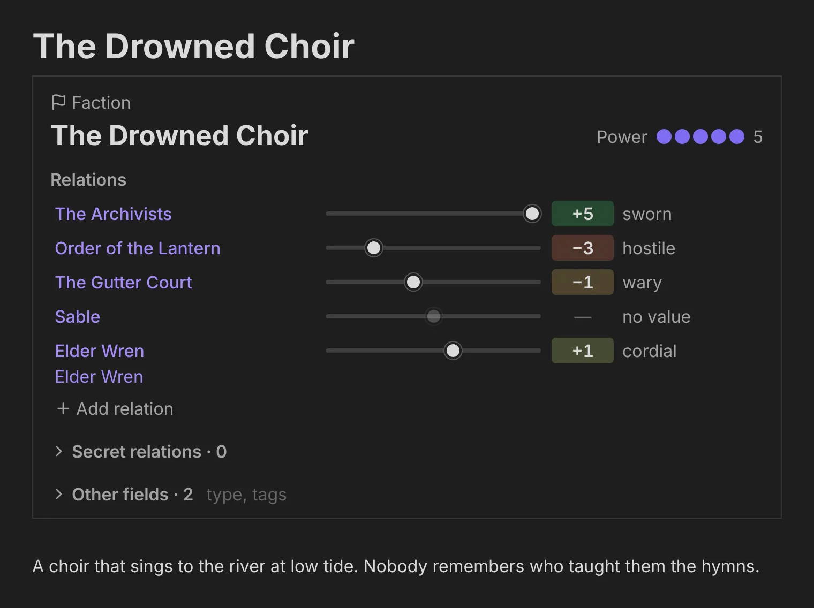
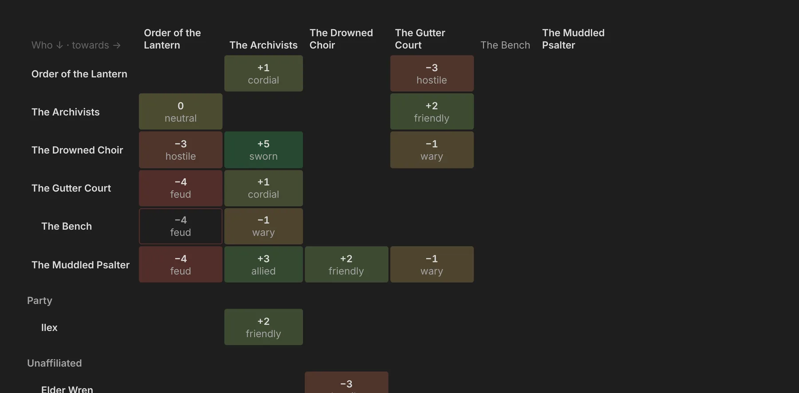
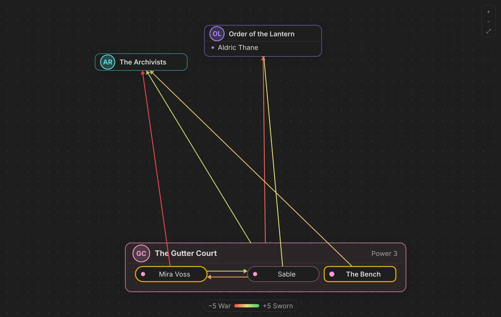
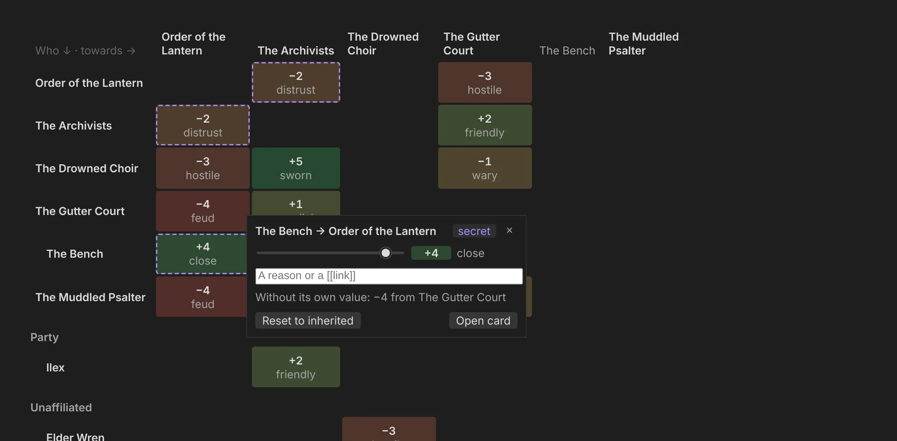
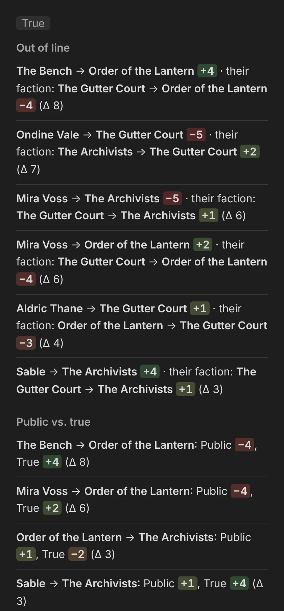
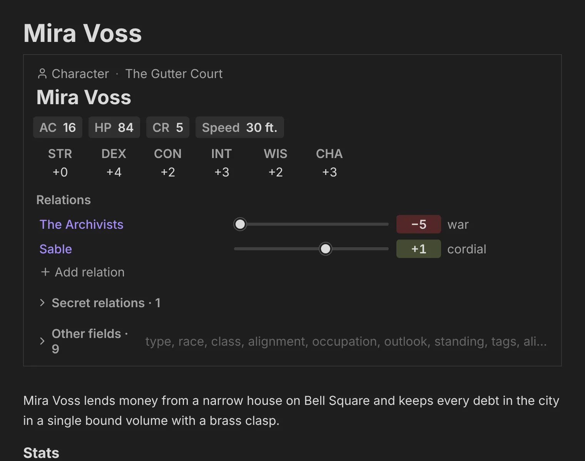
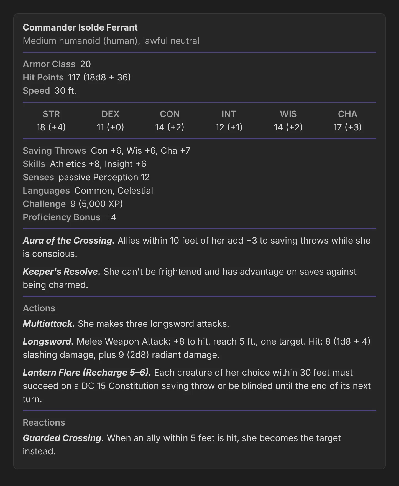
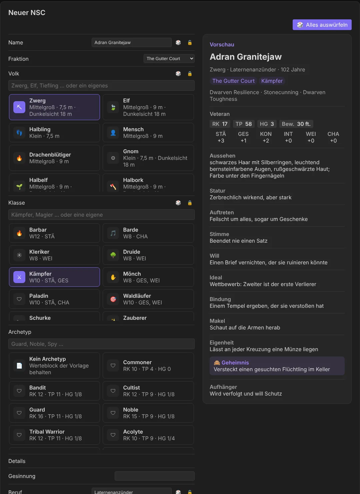
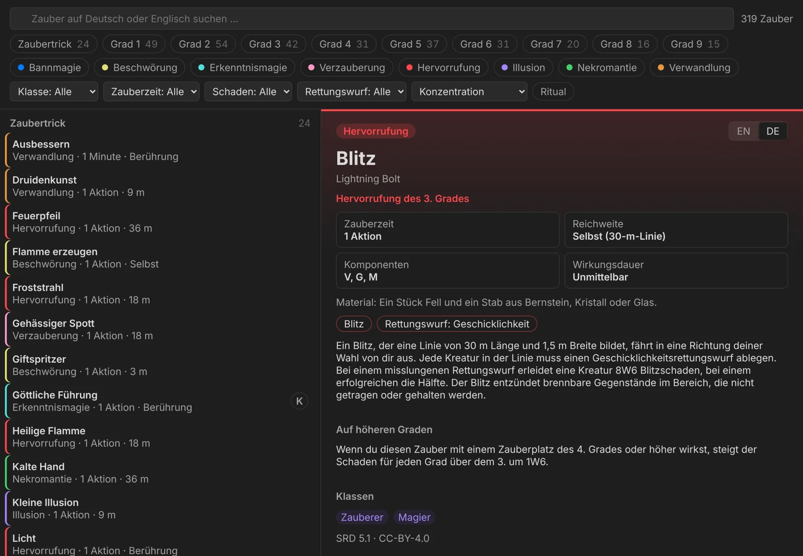
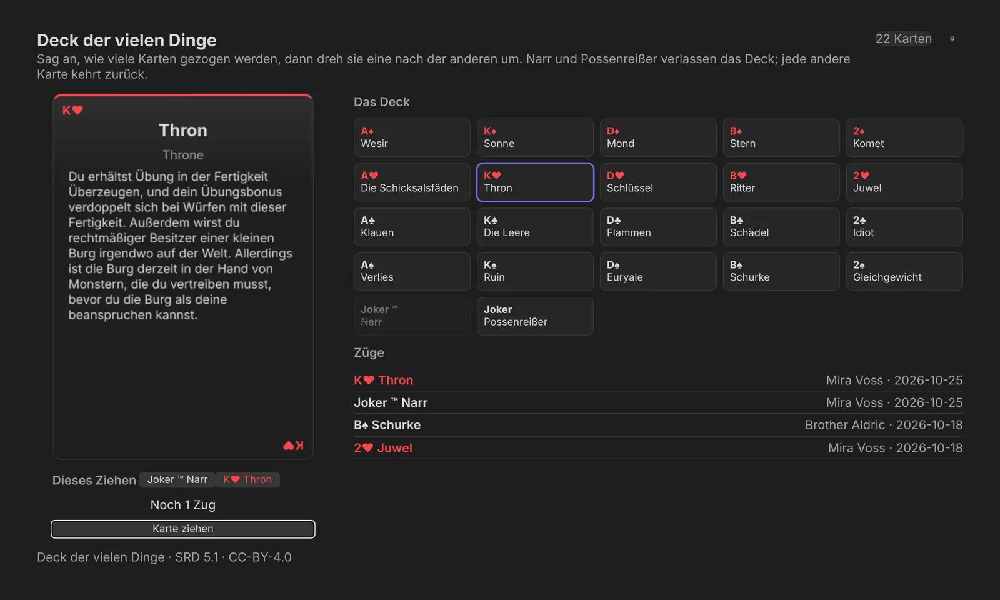

Obsidian plugins I build for the things I keep in my vault. Each one reads the notes you
already write, shows what is in them at a glance and lets you change them in place —
without accounts, without a network, without locking your notes into a format only the
plugin understands.
Files first. Your notes are the truth; everything a plugin shows is
rebuilt from them.
Readable without it. Every convention is plain Markdown any editor shows
sensibly.
Edits, not rewrites. Changes are single-line edits — comments, quotes and
order stay.
Every theme. Obsidian's own CSS variables only, dark first, at least
16 px text.
The plugins
One workshop, one plugin per folder.
Every plugin lives in this repository and shares its principles, its tooling and one
example vault. A plugin that is ready gets its own release repository for Obsidian's
directory.
🐉
dnd5e-byLokianer
dnd5e-bylokianer
In development
A game master's thinking tool for D&D 5e campaigns: factions and how they stand
towards each other, NPCs with 5e stat blocks, a spellbook, the Deck of Many Things,
and next a battle tracker and dice. It shows and suggests; the GM decides.
More plugins will join the collection — each built the same way: designed first, built
in small tested phases, checked inside Obsidian before a phase counts.
Your campaign already knows who hates whom. Now you see it.
Factions are folders, relations are numbers you type, NPCs carry their stat blocks — and
the plugin turns those plain Markdown notes into a living world you can read at a glance
and change in place.
Module 1 · Factions · accepted
Factions are folders. Relations are numbers.
A folder with a factions.md is a faction; the character notes inside are
its members; a faction folder inside another is a sub-faction. Each relation is a value
from −5 war to +5 sworn — one-directional, with an
optional reason.
type: faction
power: 3
relations: # the public face
Order of the Lantern: -4
The Archivists:
value: 1
why: "[[Mira Voss]]"
secret_relations: # the true stance, GM only
The Archivists: -2
Public and true. Secrets never show in anything marked public.
Inheritance. Members take their faction's stance unless they state their own.
Never fatal. Broken values become warnings with a one-click Fix, not a blank
view.
A living map. Every faction in its own colour, on Obsidian's canvas dots; hover
one and its stances light up with their values.
The Drowned Choir

Matrix

Matrix. Every value at a glance; inherited ones dashed.
The Gutter Court

Faction view. Drill into a faction: its members, who is out of line, where each
arrow points — drag the cards where you like.
Popover

Edit in place. Click a cell or arrow; the write lands in the right note.
Tensions

Tensions. Who is out of line, what the public face hides.
Module 2 · NPC builder
Stat blocks where you need them.
A dnd5e-statblock block holds a 5e stat block in the YAML Fantasy
Statblocks users already know. The faction card puts AC, HP, CR, speed and the ability
modifiers right under the name; the full block waits, folded, where it stands in the
note — modifiers, XP and proficiency bonus worked out.
All 21 SRD 5.1 NPCs built in, checked against the SRD in tests.
New NPC. A dialog files the note into its faction: race, class, archetype,
name, looks, voice, secret and hook — rolled from dice tables in English or German.
Your own. Archetypes, races and dice tables as plain notes; values edited right
in the rendered block.
Compatible. One command converts Fantasy Statblocks blocks and back.
Mira Voss

Stat block

Module 2 · New NPC
Roll a whole person, keep what you like.
Pick a race, a class and an archetype from tiles — the SRD's nine races, twelve classes
and twenty-one NPCs, plus your own as plain notes. Roll everything fills the
rest; lock what you want to keep and roll again. The preview card shows the NPC as it
will be written, stat block numbers included.
Your words win. Typing into a field locks it.
Bilingual dice. Every table has at least fifty entries, in English and German;
German distances in metres.
Into the stat block. A race writes its SRD traits — size, speed, darkvision,
languages, resistances.
Neuer NSC

Module 3 · Spellbook
Every SRD spell, one search away.
The 319 spells of the SRD 5.1 in their own tab: search in English or German, narrow by
level and school chips, class, casting time, damage, save, concentration and ritual.
Each spell wears its school's colour; the card shows it in both languages.
German too. Every spell's full text in German, distances in metres.
Keyboard first. ↑ ↓ through the list, Enter to read.
Linked. Spell names in a stat block open their card; your own spells join the
list.
Offline. Everything ships with the plugin; no lookups on the web.
Zauberbuch

Module 4 · Deck of Many Things
Declare, draw, and let the rules run.
The SRD's Deck of Many Things on the table: name who draws, declare the cards, turn them
one by one. The Fool and the Jester leave the deck, The Void and Donjon end the drawing,
the Jester and the Idiot offer more draws — the tab keeps count.
A note keeps the deck. Ticked cards are out, every draw is a line.
22 or 13 cards. The full deck, or the one most parties find.
Your own decks. Typed in, copied from the standard deck, pasted or imported
from JSON.
German too. Wesir, Thron, Die Leere — every effect in German.
Deck der vielen Dinge

The session note is the spine
Change a stance, log it with one click.
After every change a notice offers Log → Session 14. One click writes a line
under ## Log of tonight's session — secret changes inside a
[!gm] callout — and the views show each relation's history in their
tooltips. Starting the next session carries the loot over, each item marked with where
it was found, so there is only ever one note to watch.
## Log
- 20:31 Order of the Lantern → The Gutter Court: −2 → −3
- 21:40 The party now knows [[Lady Vermillion]].
> [!gm]
> - 21:52 The Bench → Order of the Lantern: −4 → +4
## Loot
| Item | Who has it |
| --- | --- |
| Mira's calling card (from [[Session 14 – Bell Square]]) | Orrin |
Where dnd5e-byLokianer stands
Factionsdata model, card, world graph & matrix, faction view, tensions,
popover, session log — accepted in Obsidian
NPC builderstat blocks, New NPC with races, archetypes and dice tables,
editing in the block, a dialog with live preview and locks — accepted in Obsidian
Spellbookthe SRD's 319 spells in their own tab, with filters, in English
and German — accepted in Obsidian
Deck of Many Thingsthe SRD deck drawn by its rules, own decks with a
builder and import, in English and German — accepted in Obsidian
Monster Manualthe SRD's monsters in their own tab, built like the spellbook
Battle trackerrounds, damage and outcomes into the session log
Dicerolls and rollable tables logged to tonight's session
In development, not released yet. Built in small, tested phases; every phase is checked
inside Obsidian before it counts.
Try it on Silverstadt
The repository ships an example campaign — a city of tides, bells and records with five
factions, secret stances, stat blocks and session notes. Build the plugin into it and open
the folder as a vault.
git clone https://github.com/lokianer/obsidian-plugins
cd obsidian-plugins
pnpm install
pnpm --filter dnd5e-bylokianer build
pnpm --filter dnd5e-bylokianer install-example
# open examples/vault in Obsidian, enable dnd5e-byLokianer
How the collection is built
Designed first, built in phases, checked in Obsidian.
Each plugin starts as a short design, then grows in phases with a plan and a review
stop. Pure logic sits in tested TypeScript, the Obsidian API behind thin adapters, the
views tested in a headless DOM. CI runs format, lint, strict typecheck, tests and build
on Linux, macOS and Windows for every push.
obsidian-plugins/
├── plugins/
│ └── dnd5e-bylokianer/ # one plugin per folder
├── packages/
│ └── session/ # shared, pure TypeScript
├── examples/vault/ # one test vault for all
├── docs/superpowers/ # designs and plans
└── site/ # this page